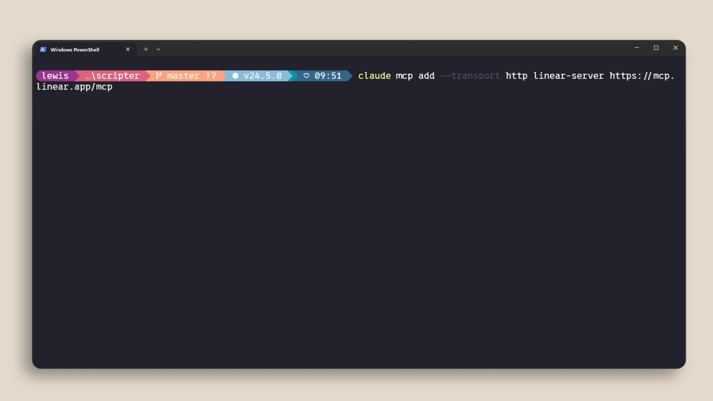
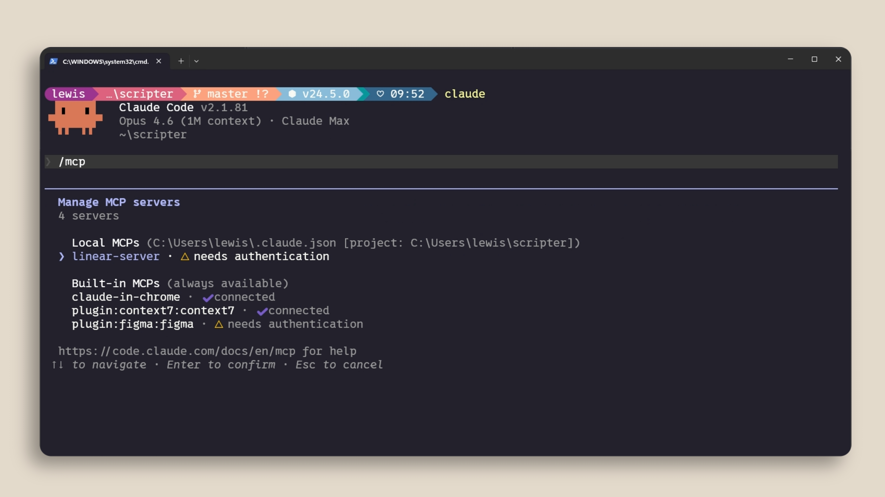

外にあるコンテキストを
つなぐ
MCP（Model Context Protocol）は、Claude Code が外部のツールやデータソースに接続できるようにするオープン標準。質問をすると、Claude はそれらのツールをいつ使うべきかを自動的に理解する。
必要性の根拠はコンテキストにある。あなたのコンテキストの多くは他の場所に住んでいる——データベース、業務アプリ、公開リポジトリ。コードベースを読むだけでは届かない範囲がある。
ツールという概念、
そして実例
前提として、エージェント型 AI における「ツール」を押さえ直す。ツールは、Claude Code のようなエージェントに、タスクをよりよく完了するためのアクションを実行する能力を与える。これは、テキストの出力が直接返ってくるだけの他の AI とは違う（→ 02）。
-
Linear MCP サーバー
チームがプロジェクト管理に Linear を使っているなら、特定の issue の詳細を取り込める。
-
Context7 MCP サーバー
いま扱っている依存関係の最新のドキュメントが必要なとき、それを Claude Code に供給する。

linear-server - get_issue(id: "MEN-12") が呼ばれる。MCP ツールも通常のツールと同じく承認を求めてくる（→ 03）。
動画はさらに、claude.com/connectors に数百のコネクタがあると付け加える。
サーバーを追加する
追加は claude mcp add コマンド。主なタイプは2つある。

claude mcp add --transport http linear-server https://mcp.linear.app/mcp
-- の後ろに、そのプロセスを起動するコマンドを書く。追加したあとの管理はセッション内の /mcp。何が接続されているか、ステータスはどうか、そして不要なサーバーの無効化ができる。

/mcp の一覧。Local MCPs（自分で追加したもの）と Built-in MCPs（常時利用可能なもの）が分かれ、それぞれ接続状態が出る。3つのスコープ
MCP サーバーは3通りのスコープを設定できる。ここも「誰のためか」で決まる。
.mcp.json をバージョン管理にチェックインコンテキストのコスト
ここが実務上いちばん効く注意点。MCP サーバーは、実際に使っていないときでもコンテキストウィンドウにツール定義を追加する。多くのサーバーを設定していると、それだけで利用可能なコンテキストを食う。
対策は単純で、/mcp を実行して接続されているものを確認し、実際に使っていない／使う予定のないものを無効化する。

Tools: 8 tools がそのまま常駐コスト。使わないなら 3. Disable。代替手段も2つ示される。
-
CLI で代用できるなら CLI を使う
GitHub 用の
gh、AWS 用のawsのようにCLI 相当のものがあるなら、そちらのほうがコンテキスト効率が高い。永続的なツール定義を追加しないから。 -
Skill を使う
スキルは名前と説明だけがコンテキストに読み込まれ、Claude が必要だと判断したときにはじめて全内容が読み込まれる。CLI ツールの使い方をここに置く、という組み合わせが提案されている（→ 08 スキル）。
MCP ツールがコンテキストウィンドウの10% を超えると、Claude Code は自動的にツール検索モードに切り替わり、必要に応じて適切なツールを発見しにいく。ただし動画は正直にこう付け加える——コンテキストに載っていない分、これは確実に機能するとは限らない。
まとめ
MCP は Claude Code を外部のツールとデータソースにつなぐ。
- claude mcp add で追加する
- .mcp.json でプロジェクトにスコープする
- 使っていないサーバーは無効化する
3つ目が効いてくるのは、たいてい後になってから。接続できることと、常時つないでおくべきことは別の話——コンテキストという有限の資源を扱っている以上、ここは意識的に管理する必要がある。
原文トランスクリプト（英語・全文）
YouTube の自動生成字幕から取得したもの。冒頭の Model contact protocol は Model Context Protocol、Cloud code は Claude Code の誤認識。
Model contact protocol is an open standard that lets Claude code connect to external tools and data sources. >> [music] >> When you ask a question, Claude will automatically understand when it should
use those tools to better understand your query. Context is one of the most important parts when working with Claude code. A lot of your context lives elsewhere like your databases, your productivity apps,
or [music] in public repositories. This is where MCP comes [music] in. First, it's important to understand the concept of tools when talking about Agentic AI. Tools give agents like Claude code the ability to perform
actions in order for them to better complete their tasks. This is different from other AI where you just get an output back directly in text usually. For example, if your team is using Linear as our project
management software, you can add a Linear MCP server to bring in the details of your specific issues. If you want to get up-to-date documentation of a dependency that you're working with, then the Context 7
MCP server will provide Claude code with that. There are also hundreds of different connectors at claude.com/connectors. You can add MCP servers with the Claude MCP add command. There are two main types. HTTP servers
are for remote services. These are hosted by the service provider and connect over the network. STDIO servers are for local processes that run on your machine. You can manage your servers with the
/mcp inside a Claude code session to see what's connected, the status, and disable servers that you don't want to use. MCP servers can be scoped in three different ways. One, local means it's only available in
the current project for you. Two, the user, which means it's available across all your projects. And three, project scope uses a .mcp.json file that you check into your version control, so anyone working on the code
base gets the exact same servers automatically. Now, one thing to be aware of is that MCP servers add tool definitions to your context window, even when you're not using them. So, if you have a lot of servers configured,
this eats into your available context. Run the {slash} MCP command to see what's connected and disable anything that you're not actively using or don't think that you're going to use. If a tool has a CLI equivalent like GH
for GitHub or AWS for AWS, the CLI is more context efficient because it doesn't add persistent tool definitions. You also might benefit from using a skill in this scenario. A skill has a name and a description
that is loaded into context. Similar to MCP, when Cloud thinks it needs to use that skill, it then decides to load it into the context window, which is where you could put the command line interface
tools. If your MCP tools exceed 10% of your context window, Cloud code will automatically switch to tool search mode, which will discover the right tools on demand, but this might not work as well since it's just not in the
context. >> [music] >> Now, a quick recap. MCP connects Cloud code to your external tools and data sources. >> [music] >> Add servers with Cloud MCP add, scope them to your project with .mcp.json
so that your team gets them automatically, and keep an eye on the context usage by disabling servers [music] that you're not actively using.